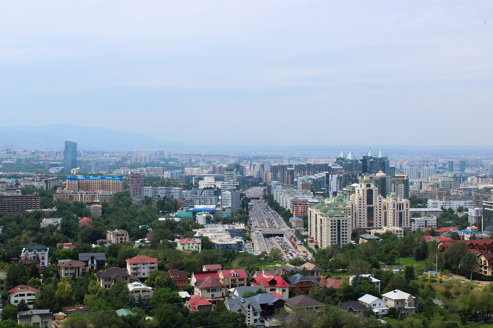

Uzbekistan joins the CIS: the Alma-Ata Protocol (1991)
On 21 December 1991, in Alma-Ata (Almaty), Kazakhstan, 11 former Soviet republics signed the Alma-Ata Protocol and Declaration, formally establishing the Commonwealth of Independent States (CIS). The documents declared that the USSR 'ceases to exist as a subject of international law and geopolitical reality.' For Uzbekistan, the protocol was signed by President Islam Karimov. It was the first multilateral framework after independence. Based only on verified facts.

By late 1991 the Soviet Union was dissolving and the republics that emerged from it were declaring independence. Uzbekistan had declared state independence on 31 August 1991. Within a few months, the former Soviet republics created the Commonwealth of Independent States (CIS) to rebuild their relations on a new basis. Below, this process and Uzbekistan's accession are set out on a facts-only basis, drawing on verified history.
Background: the Belovezha Accords (8 December)
On 8 December 1991 the leaders of Russia, Ukraine and Belarus signed the Belovezha Accords, declaring the Soviet Union dissolved and creating the CIS. But this was the decision of those three states; Central Asia and the other republics had not yet formally taken part in the process.
The Alma-Ata Protocol (21 December)
On 21 December 1991, in Alma-Ata (Almaty), Kazakhstan, the leaders of 11 former Soviet republics met and signed the Alma-Ata Protocol and the Alma-Ata Declaration. With this the CIS expanded beyond the original three states and was formally established; the Central Asian republics joined as equal founders.
The 11 founding states
The 11 states that signed the Alma-Ata Protocol were: Armenia, Azerbaijan, Belarus, Kazakhstan, Kyrgyzstan, Moldova, Russia, Tajikistan, Turkmenistan, Ukraine and Uzbekistan. The Baltic states (Lithuania, Latvia, Estonia) and Georgia did not join; Georgia became a member later, in 1993.
Who signed for Uzbekistan
The Alma-Ata Protocol was signed on behalf of Uzbekistan by President Islam Karimov. Uzbekistan had declared independence a few months earlier, on 31 August, and on 29 December 1991 — days after the protocol — held an independence referendum and its first presidential election.
What the documents declared
The Alma-Ata Declaration stated that the USSR 'ceases to exist as a subject of international law and geopolitical reality.' The documents affirmed the equal sovereignty and borders of the members and set out coordinated joint control over strategic (nuclear) forces.
Nuclear weapons and the UN seat
Under the agreements, control over the former union's nuclear forces was coordinated jointly. Russia continued the Soviet Union's membership in the UN, including its permanent seat on the Security Council. Soviet President Mikhail Gorbachev resigned on 25 December 1991, and the USSR was formally dissolved on 26 December.
What it meant for Uzbekistan
The CIS was Uzbekistan's first multilateral framework after independence: it served to preserve economic, transport and security ties across the former Soviet space on a new, independent inter-state basis. The organization's headquarters is in Minsk, Belarus.